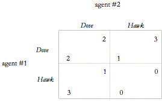

Независимо от достоинств трех подходов, о которых мы говорили выше, есть некоторые замечательные идеи о том, что применение теории игр предлагает моральному теоретику. Как мы уже отмечали выше, существует много игр с несколькими равновесиями. Это особенно характерно для повторных игр конкретных игр, таких как дилемма заключенного. Одним из следствий этого факта является то, что, поскольку эти игры являются полезными представлениями или моделями наших социальных взаимодействий, у нас есть основания ожидать много неопределенности в мире. Как следствие, у нас есть основания опасаться моральных теоретиков, которые заявляют об универсальности и общности в своих конкретных нормативных рекомендациях (Hardin 1988, 2003). От переводчика: При этом во всем примерах только один вариант равновесия был наилучшим, и нет причин не считать нормы приводящие к такому равновесию универсальными
Во-вторых, теория игр ясно показывает, что в любом достаточно большом населении можно ожидать детерминированных сочетаний поведенческих диспозиций. Рассмотрим знаменитую игру Hawk-Dove (Smith 1982):

Два равновесия в чистых стратегиях в простой игре 2 X 2 являются результатом того, что каждый игрок принимает другую стратегию. Если мы думаем о стратегиях «ястреба» (hawk) и «голубя» (dove), представляющих моральные установки или персонажи, то у нас может быть причина ожидать, что человеческие популяции состоят из агентов, условно говоря, с разными характерами (см. Также Frank 1988; Smith 1982; Skyrms 1996). Более того, с учетом этого анализа далеко не ясно, что теоретик морали в любой ситуации может рекомендовать одно и то же расположение, то есть одну и ту же силу, для всех агентов в этой совокупности: одни должны быть «ястребами», другие - «голубями» ( См. Также Kuhn 2004).
Принимая во внимание, что последние два замечания указывают на оригинальные идеи для моральных теоретиков, мы не можем не упомянуть некоторые критические замечания, которые были сформулированы против применения теории игр к этике. Наиболее фундаментальные из них касаются неявной антропологии рационального агента. Вопрос в том, может ли все, что имеет отношение к моральной теории об агенте, быть захвачено довольно одномерной картиной рационального человека, как это предлагает теория игр. Предполагается, что агент будет полностью охарактеризован его ранжированием предпочтений по результатам и его убеждениям на каждом этапе игры. Тем не менее, морально важные различия, например различия между характерами, не находят места в таком подходе. От переводчика: С моей точки зрения это спорное замечание, но тут его обсуждать неудобно т.к. вопрос уходит в определение морали и нравственности, по моим определениям для морали индивидуальные особенности не важны, а для нравственности могут иметь значение
Мы можем проиллюстрировать это беспокойство тем, как понятие репутации используется в моделях альтруистического сотрудничества. Современная теория игр использовала понятие репутации игрока в попытках объяснить сотрудничество в играх с повторяющимися играми, таких как дилемма заключенного (Kreps and Wilson 1982). Однако неясно, что именно означает иметь репутацию в этих контекстах. Обычно репутация - это то, что считается характером человека. В этих моделях, с другой стороны, репутация - это просто история ходов игрока в подобных играх. Между ними существует морально значимая разница. Чему мы верим, когда узнаем, что купец честен? Обычно мы полагаем, что это означает, что он тот человек, который не будет обманывать других, например клиентов, даже в ситуациях, когда это ему выгодно. Почему он так поступает? В то время как другой купец не обманывает, только когда речь не идёт о выгоде, наш купец честен и не обманывает из-за своей честности, то есть своего характера. Обычно это имеет большое значение в том, как мы будем судить этих двух торговцев. Оба сотрудничают с другими, но только последний заслуживает похвалы за свою честность. Теория игр и теория полезности обычно не имеют места для этого различия (см. Morris 1999). (Релевантность здесь Brennan и Pettit, 2004.) От переводчика: А как нам узнать что человек честен? Мы же внутрь не можем заглянуть, поэтому его репутация это и есть история его поступков в разных ситуациях, если мы знаем что он поступил честно даже во вред себе, то считаем его честным, хотя нет гарантии что это действительно так, может он случайно так поступил или сознательно накапливает репутацию честного чтобы всех по крупному обмануть - мы не можем судить о честности, можем только говорить о репутации = истории поступков.